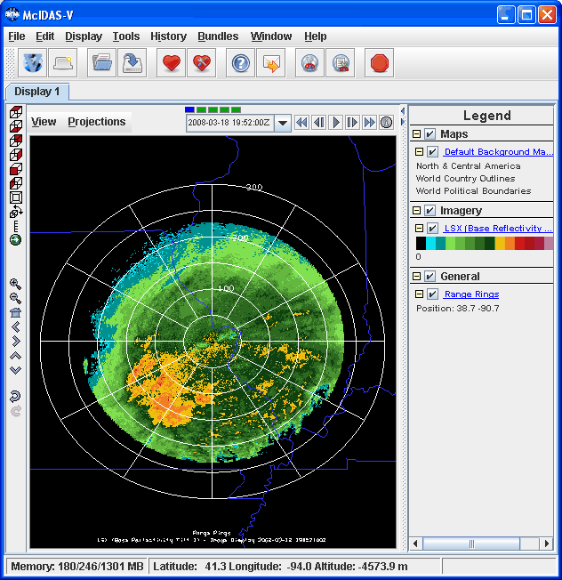
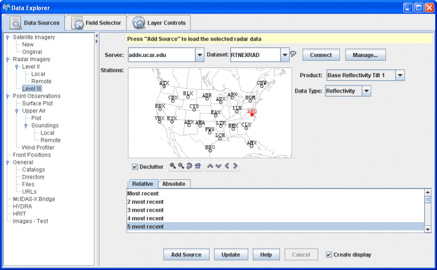
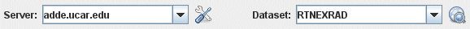
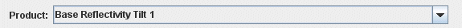
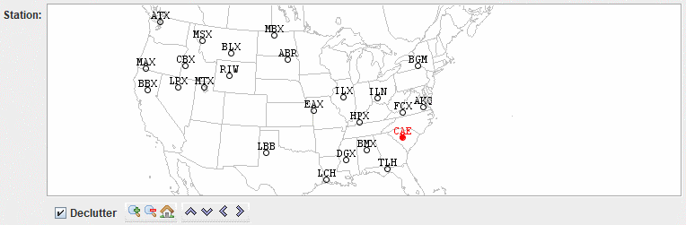
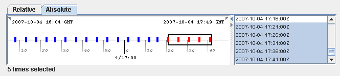
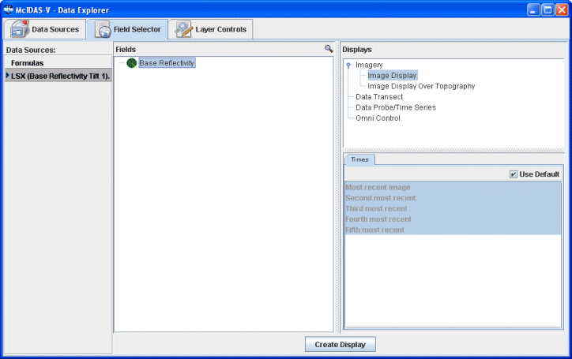

Displaying Level III Radar Imagery
This section describes how to make displays using NWS WSR-88D Level III data.

Image 1: Level III Radar Display Overlaid with Range Rings
The steps include:
Choosing Radar Image Data from a Remote Server
In the Data Explorer window, select the Data Sources tab.
On the left side of this tab, select Radar->Level III from the list of available choosers. For more information about the Level III radar chooser,
see Choosing NEXRAD Level III Radar
Data.

Image 2: Data Sources Tab of the Data Explorer
- Choose the ADDE Server: adde.ssec.wisc.edu and
the Dataset: RTNEXRAD.

- Press Connect to query the server for available
radars types:
- Select a radar product, such as N0R - Base Reflectivity Tilt 1,
from the pull-down menu.

- The map shows the available radar station locations and IDs. Select one
by clicking on it.

The Declutter checkbox allows you to
show all stations (not checked), or only a limited number of stations
that do not overlap each other (checked). You will need to zoom in
to see all the stations without overlaps.
- You can choose a relative set of times steps (e.g., Last 5 times) or absolute times (see step 6):
- You can choose a set of absolute times:

When choosing absolute times for the first time McIDAS-V needs to
query the ADDE server for the times. This may take some time. To select
more than one time use Control+click or Shift+click.
- When done, load the selected radar data with the Add Source button.
Creating the Radar Display
The radar data source that you selected will be shown in the Field Selector tab of the Data Explorer.

Image 3: Field Selector Tab of the Data Explorer
Open up the Digital Accumulation Array tab under the Fields panel
( ) to select
a data type. Select "Image display" in the Displays panel
under Imagery, and make the display by clicking the
) to select
a data type. Select "Image display" in the Displays panel
under Imagery, and make the display by clicking the  button.
button.
You can add Range Rings with
the Display->Add Range Rings menu item. To control the looping of the images in the Main Display window, use the Time Animation Widget.